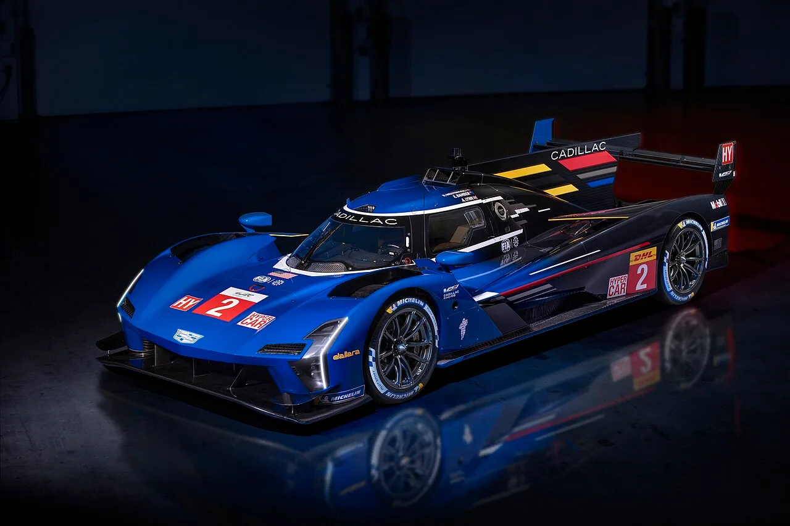

▲ 캐딜락 V-시리즈.R LMDh 레이스카. V-ONE은 이 차의 파워트레인과 외관을 상당 부분 공유한다
캐딜락이 V-ONE을 공개했습니다. 8월 14일 미국 캘리포니아 카멜에서 열린 더 퀘일, 모터스포츠 개더링에서였습니다.
제원은 단순합니다. V8 하이브리드, 합산 830마력, 좌석 하나. 그리고 생산 계획은 없습니다. 세상에 한 대만 존재하는 원오프 콘셉트입니다.
1. 르망 레이스카를 그대로 가져왔다
V-ONE의 뿌리는 V-시리즈.R입니다. 캐딜락이 LMDh 규정으로 만든 프로토타입 레이스카로, 르망 24시를 비롯한 내구 레이스에 출전하는 차입니다.
공유하는 것이 많습니다. 서스펜션, 변속기, 일부 전자장비가 같고, 외관도 상당 부분을 나눠 씁니다. 파워트레인 역시 레이스카와 같은 V8 하이브리드 기반입니다. 개발에는 캐딜락 디자인과 캐딜락 레이싱뿐 아니라 이탈리아 섀시 제작사 달라라가 함께 참여했습니다.
흥미로운 대목은 출력입니다. V-ONE의 830마력은 원본 레이스카보다 높습니다. V-시리즈.R은 규정에 따라 670마력으로 제한되기 때문입니다. 레이스에서는 규정이 출력을 묶지만, 팔지 않는 콘셉트카에는 그런 제약이 없습니다.
여기서 LMDh가 뭔지 짚어둘 필요가 있습니다. 내구 레이스의 최상위 클래스 규정 중 하나로, 제조사가 자체 엔진과 외형을 개발하되 섀시와 하이브리드 시스템은 공통 규격을 쓰도록 한 방식입니다. 개발비를 낮춰 더 많은 제조사가 참여하게 만든 구조이고, 실제로 이 규정 이후 르망 참가 브랜드가 크게 늘었습니다.
캐딜락은 이 프로그램에 상당한 자원을 투입해 왔습니다. V-ONE은 그 투자로 얻은 기술이 실제로 도로용 차에 쓰일 수 있다는 것을 보여주는 전시물입니다.

▲ LMDh 규정은 섀시와 하이브리드 시스템을 공통 규격으로 두고 엔진과 외형만 제조사가 개발한다
2. 좌석이 하나라는 것의 의미
싱글시트는 이 차가 무엇을 포기했는지 보여줍니다.
좌석을 하나만 두면 차체 폭을 줄일 수 있고, 무게중심을 정확히 가운데 놓을 수 있습니다. 승객 공간과 그에 따르는 안전 구조, 편의 장비가 전부 빠집니다. 순수하게 달리는 것만 남긴 구성입니다.
동시에 이는 도로에서 탈 수 없다는 뜻이기도 합니다. 대부분의 국가에서 일반 도로용 차량은 충돌 안전과 등화, 배출가스 기준을 충족해야 하는데, 레이스카 기반 싱글시트가 이를 만족하기는 어렵습니다.
도어에 새겨진 일련번호 플레이트도 상징적입니다. 한 대뿐인 차에 번호를 매기는 것은 실용적 목적이 아니라, 이것이 수집품이자 기록물이라는 선언에 가깝습니다.
3. 팔지 않을 차를 왜 만드나
캐딜락은 V-ONE을 두고 "레이스에서 축적한 기술을 고객용 고성능 차량 영역으로 확장할 수 있음을 보여주는 콘셉트"라고 설명했습니다. 이 문장에 목적이 다 들어 있습니다.
첫째, 브랜드 포지셔닝입니다. 캐딜락은 오랫동안 미국식 대형 럭셔리 세단·SUV 브랜드로 인식돼 왔습니다. 최근 V-시리즈로 고성능 라인을 키우고 있지만, 유럽 프리미엄 브랜드가 쌓아온 모터스포츠 서사에는 아직 미치지 못합니다. 르망에 나가는 레이스카와 직결된 차를 전시하는 것은 그 격차를 메우려는 시도입니다.
둘째, 기술 예고입니다. "고객용 고성능 차량 영역으로 확장"이라는 표현은, 이 파워트레인이나 기술 요소가 향후 양산 모델에 반영될 수 있다는 신호로 읽힙니다. 콘셉트카는 종종 이런 방식으로 다음 제품의 방향을 미리 보여줍니다.
셋째, 무대 선점입니다. 공개 장소가 몬터레이 카 위크 기간의 '더 퀘일'이었다는 점이 중요합니다. 같은 주에 람보르기니는 레부엘토 SV를, 고든 머레이는 S1을, 맥라렌은 수동 콘셉트를 내놨습니다. 이 무대에서 화제를 만들려면 양산차 몇 대로는 부족합니다.
4. 정리 — 콘셉트카의 역할
정리하면 캐딜락 V-ONE은 V-시리즈.R 레이스카 기반의 830마력 V8 하이브리드 싱글시트 원오프이고, 판매되지 않으며 양산 계획도 없습니다.
이런 차의 가치는 판매량이 아니라 브랜드가 어디로 가려는지 보여주는 데 있습니다. 캐딜락이 최근 전동화 라인업을 빠르게 늘리고 있다는 점을 함께 보면 방향이 더 분명해집니다. 대형 전기 SUV 비스틱은 이미 국내 인증을 마쳤고, 2027년형부터는 전 차종이 테슬라 규격 충전 포트를 씁니다.
다만 공개된 정보는 제한적입니다. 공차중량, 가속 성능, 최고속도는 발표되지 않았고, 이 기술이 실제 양산 모델에 언제 어떤 형태로 반영될지도 확인되지 않았습니다.